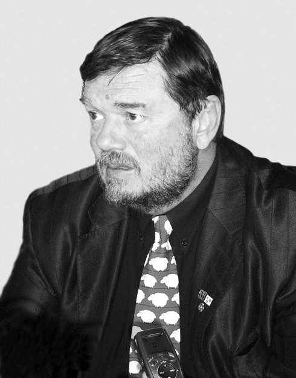

Петко Йовчев
Петко Йовчев е роден на 24 август 1955 г. в Бургас. Петко Йовчев е проектирал или е участвал в проектирането на летище Приморско, пристанище Росенец на „ЛУКОЙЛ“ АД, подробният устройствен план на летище Варна, общия устройствен план на град Бургас, проект за обновяването на централна градска част (главна улица „Александровска“);, инвестиционен проект „Супер Бургас- Фаза Първа”, концептуалният дизайн на летище Бургас, подробният устройствен план на спортния комплекс „Черноморец-Арина“, обновяването на площад „Тройката“ (1995), контактна зона пристанище Бургас.(Порт Барселона), сградата на пътническия терминал на летище Пловдив, Тулски индустриален парк. От 1990 година е изпълнителен директор на Атика Р5 ООД, чийто екип от архитекти проектира сградите на Бургаския свободен университет(сграда на годината през 2004) и хотел "Мираж" в Бургас. През 2004 сградата на летище Бургас е носител на приз Сграда на годината. През 2009 година пътническия терминал на Летище Пловдив получава специалната награда за високотехнологична сграда, съчетаваща функционалност и комфортна среда на конкурса Сграда на годината.